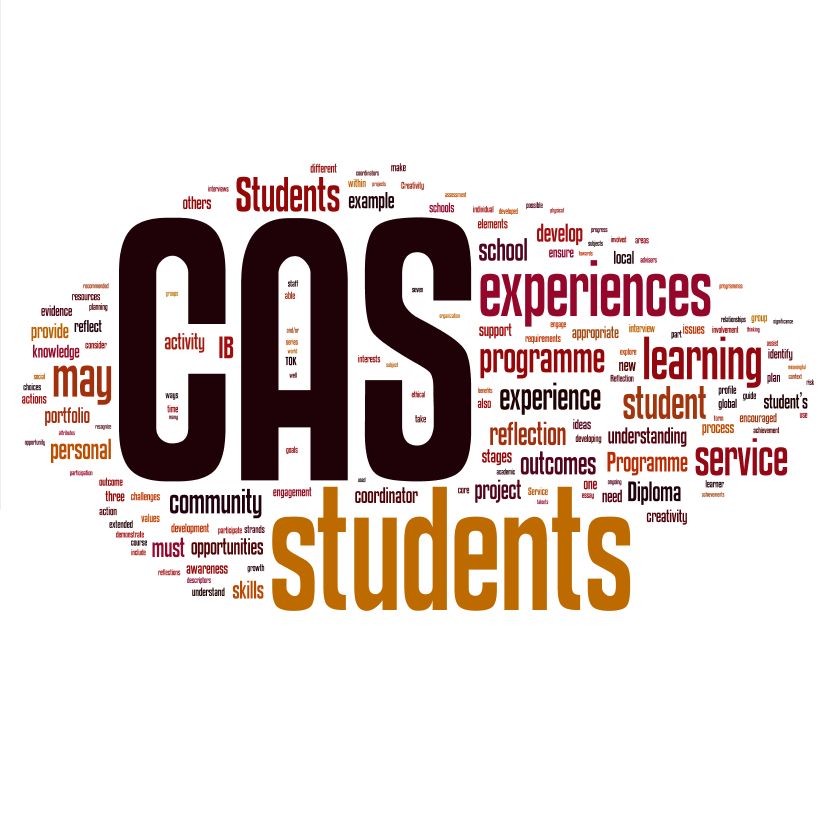

MY PROJECTS

CAS system
Creativity, Action and Service (CAS) was part of requirements to be completed in order to graduate with International Baccalaureate. To make life easier for future and present students i programmed a database with all possible activities in the area.

LDI webpage
One of my roles in organizing the LDI conference was to design the webpage promoting the event. The page was crucial for the event because of marketing reasons and also every participant had to register using the page.

School webpage
As an IB student I decided to improve school's webpage. In the beginning it was a very simple project but after some time it became a very complex and well structured page that the IB's official office decided to buy and use.